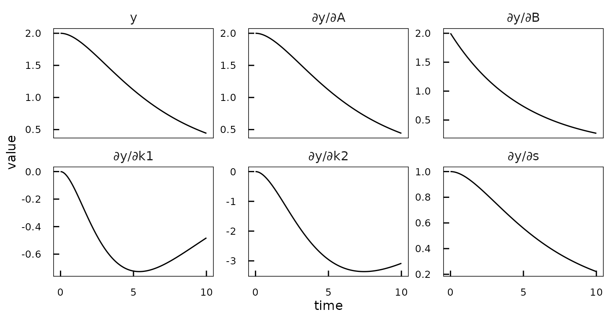

cppFUN() compiles
a system of algebraic equations \(y = g(x,
p)\), evaluated on the rows of a matrix of variables \(x\) with parameters \(p\) shared by all rows, with first and
second derivatives. Typical uses are observation functions and
reparametrizations of the inputs of solveODE(). The
equations follow the expression
language of cppODE(); the generated code is described
in Derivative directions of
cppFUN().
Function definition
variables are given per row, parameters
once; variables defaults to all symbols of the equations
not in parameters (getSymbols()).
derivMode names the derivative products built, any of
"forward" (default: jac, hess,
evaluate, evaluateBatch),
"reverse" (vjp) and
"forward-reverse" (vjp with curvature);
deriv2 = TRUE adds the second derivatives,
deriv = FALSE builds func alone, and
fixed excludes symbols from differentiation at compile
time. As with cppODE(), compile = FALSE (here
the default) writes the source to outdir for a joint
compile().
The guide uses an observable \(y = s(A + B)\) of the decay chain and the fraction \(z = B/(A + B)\), a reparametrization \(k_i = \exp(\lambda_i)\), and an error model \(\sigma = \sqrt{a^2 + b^2 B^2}\).
eqns <- c(A = "-k1*A", B = "k1*A - k2*B")
parms <- c(A = 1, B = 0, k1 = 0.5, k2 = 0.2)
times <- seq(0, 10, by = 0.1)
chain <- cppODE(eqns, modelname = "g7_chain", compile = FALSE)
chainR <- cppODE(eqns, derivMode = "reverse", modelname = "g7_chainR", compile = FALSE)
obs <- c(y = "s*(A + B)", z = "B/(A + B)")
g <- cppFUN(obs, variables = c("A", "B"), parameters = "s", deriv2 = TRUE,
derivMode = c("forward", "forward-reverse"), modelname = "g7_obs")
gM <- cppFUN(obs, variables = c("A", "B"), parameters = "s", convenient = FALSE,
modelname = "g7_obsM")
trafo <- cppFUN(c(k1 = "exp(lk1)", k2 = "exp(lk2)"), variables = character(0),
parameters = c("lk1", "lk2"), modelname = "g7_trafo")
err <- cppFUN(c(sigma = "sqrt(a^2 + b^2*B^2)"), variables = "B", parameters = c("a", "b"),
modelname = "g7_err")
compile(chain, chainR, g, gM, trafo, err, output = "guide7", cores = 2)Values and derivatives
The returned list holds func, jac,
hess, evaluate, evaluateBatch and
vjp, each NULL when not built. They take the
inputs as named arguments, a variable as a vector with one element per
row. func returns the outputs, [row, output].
jac returns the first derivatives, [row, output,
direction], by default in the variables and the parameters;
fixed excludes parameters at run time.
g$jac(A = 0.2, B = 0.5, s = 2)[1, , ]
#> A B s
#> y 2.000000 2.0000000 0.7
#> z -1.020408 0.4081633 0.0
dimnames(g$jac(A = 0.2, B = 0.5, s = 2, fixed = "s"))[[3]]
#> [1] "A" "B"hess returns the second derivatives, [row, output,
direction, direction]; evaluate returns value, first and,
with deriv2 = TRUE, second derivatives from one pass.
g$hess(A = 0.2, B = 0.5, s = 2)[1, "z", , ]
#> A B s
#> A 2.9154519 0.8746356 0
#> B 0.8746356 -1.1661808 0
#> s 0.0000000 0.0000000 0
names(g$evaluate(A = 0.2, B = 0.5, s = 2, deriv2 = TRUE))
#> [1] "y" "tangent" "hessian"Chain rule with ODE sensitivities
tangentX, [row, variable, direction], and
tangentP, [parameter, direction], are the derivatives of
the inputs in the directions \(\theta\); hessianX and
hessianP are the second derivatives. The results are then
derivatives in \(\theta\). With the
sensitivities of the chain as tangentX and a unit row for
\(s\) as tangentP,
evaluate returns the observables with their derivatives in
\(\theta = (A_0, B_0, k_1, k_2,
s)\):
out <- solveODE(chain, times, parms)
theta <- c(dimnames(out$tangent)[[3]], "s")
tangX <- array(0, c(length(out$time), 2, length(theta)),
dimnames = list(NULL, c("A", "B"), theta))
tangX[, , 1:4] <- out$tangent
tangP <- matrix(c(0, 0, 0, 0, 1), 1, dimnames = list("s", theta))
obsOut <- g$evaluate(A = out$variable[, "A"], B = out$variable[, "B"], s = 2,
tangentX = tangX, tangentP = tangP)
obsOut$tangent[101, , ]
#> A B k1 k2 s
#> y 0.442133 0.27067062 -0.4817043 -3.082325 0.2210665
#> z 0.000000 0.01866078 0.2715690 -0.212504 0.0000000
traj <- list(time = out$time, variable = obsOut$y, tangent = obsOut$tangent)
ggplot(longFormat(traj, "y"), aes(time, value)) +
geom_line() +
facet_wrap(~panel, scales = "free_y", ncol = 3) +
scale_x_continuous(n.breaks = 3)
A tangent not given as an argument is taken from attribute
"deriv" of the variables or parameters, a second derivative
from attribute "deriv2".
Reparametrization
A function of the parameters alone has no variables and one row. Its
Jacobian, rows named by the outputs, is a partial tangent
of solveODE(): the sensitivities are then derivatives in
the logarithms \(\lambda_i\) of the
rate constants.
k <- trafo$evaluate(lk1 = log(0.5), lk2 = log(0.2))
k$y
#> k1 k2
#> [1,] 0.5 0.2
outL <- solveODE(chain, times, c(A = 1, B = 0, k$y[1, ]), tangent = k$tangent[1, , ])
outL$tangent[101, "B", ]
#> lk1 lk2
#> -0.08673693 -0.30823163
out$tangent[101, "B", c("k1", "k2")] * c(0.5, 0.2)
#> k1 k2
#> -0.08673784 -0.30823251Vector-Jacobian products
vjp contracts a cotangent of the outputs, [row, output]
or [row, output, seed], with the Jacobian in one reverse sweep. It
returns cotangentX, [row, variable, seed], and
cotangentP, [parameter, seed], summed over the rows because
the parameters are shared. cotangentX is the cotangent of
the states for a reverse-mode solveODE(), so the gradient
of \(\sum_t y(t)\) in \(\theta\) takes two backward sweeps:
x <- out$variable
v <- g$vjp(vars = x, params = c(s = 2), cotangent = cbind(y = rep(1, nrow(x)), z = 0))
c(solveODE(chainR, times, parms, cotangent = v$cotangentX[, , 1])$cotangent[, 1],
v$cotangentP[, 1])
#> A B k1 k2 s
#> 118.84394 87.60472 -52.92106 -236.89329 59.42208
colSums(obsOut$tangent[, "y", ])
#> A B k1 k2 s
#> 118.84416 87.60469 -52.92081 -236.89013 59.42208Under "forward-reverse", vjp also takes
tangentX, tangentP and curvature,
the derivative of the cotangent along the tangent, and returns
curvatureX and curvatureP, the derivative of
the contraction along the tangent (forward over reverse). These
seeds are positional. Along \(k_1\):
Matrix interface
With convenient = FALSE, func,
jac, hess and evaluate take a
matrix vars, columns named by the variables, and a named
vector params; evaluateBatch and
vjp always do. attach.input = TRUE appends the
inputs that are neither variables nor parameters to the result.
Argument sets in one call
evaluateBatch(sets, cores, deriv2) runs
evaluate over a list of argument sets, each with
vars, params and optionally the seeds,
fixed and attach.input, in one call and on
cores threads. Here the observables at three scales:
sets <- lapply(c(1, 2, 4), function(s) list(vars = x[c(11, 51, 101), ], params = c(s = s)))
sapply(g$evaluateBatch(sets, cores = 2), function(r) r$y[, "y"])
#> [,1] [,2] [,3]
#> [1,] 0.9601974 1.920395 3.840790
#> [2,] 0.5584095 1.116819 2.233638
#> [3,] 0.2210665 0.442133 0.884266evaluateMany()
evaluates one argument set for each of several functions, here
observable and error model, in one call and one parallel region.
many <- evaluateMany(list(g$evaluateBatch, err$evaluateBatch),
list(list(vars = x[c(11, 51, 101), ], params = c(s = 2)),
list(vars = x[c(11, 51, 101), "B", drop = FALSE],
params = c(a = 0.01, b = 0.1))),
cores = 2)
many[[2]]$y
#> sigma
#> [1,] 0.03675324
#> [2,] 0.04867090
#> [3,] 0.02365089
many[[2]]$tangent[, "sigma", ]
#> B a b
#> [1,] 0.09622733 0.2720848 0.3403240
#> [2,] 0.09786652 0.2054616 0.4661628
#> [3,] 0.09062151 0.4228170 0.1942272